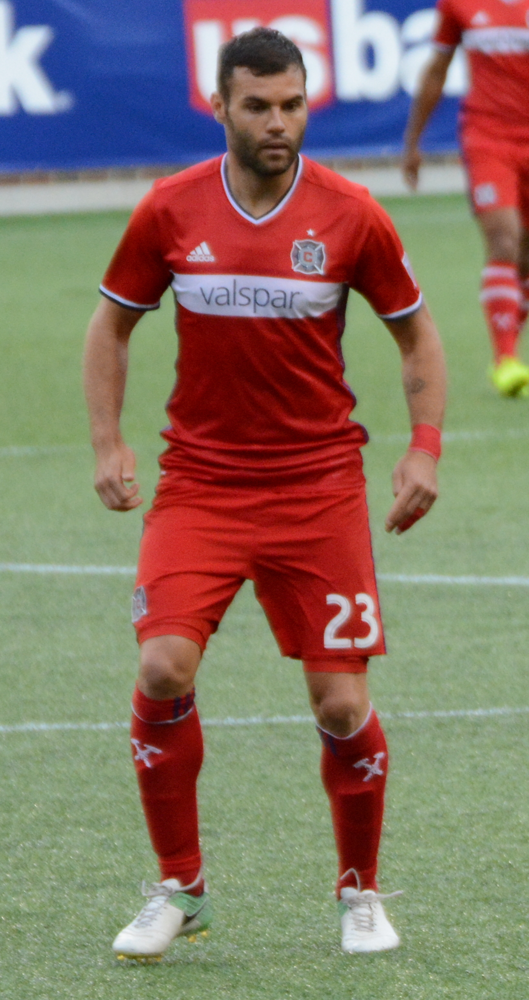
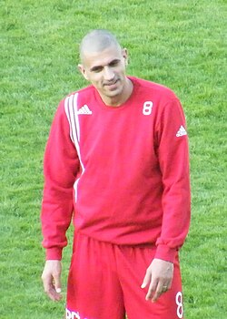
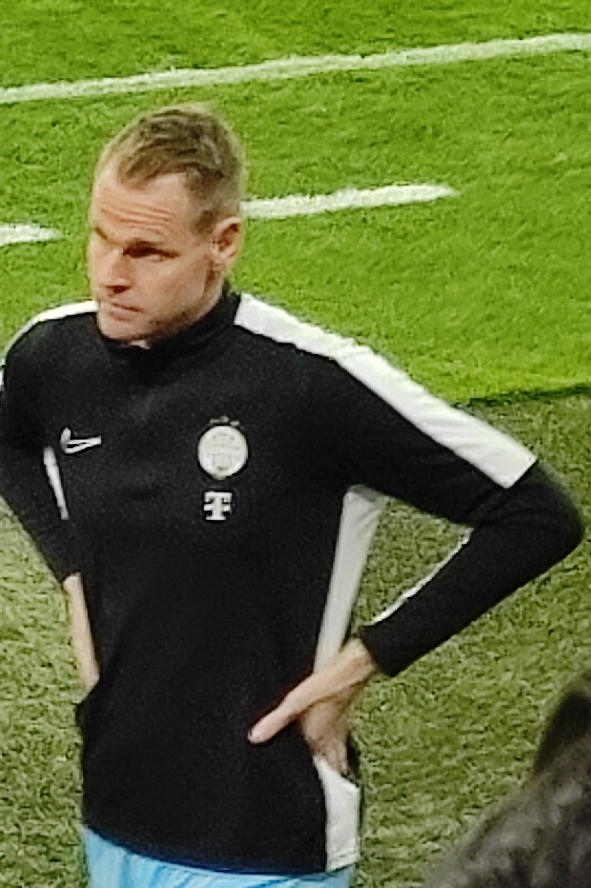
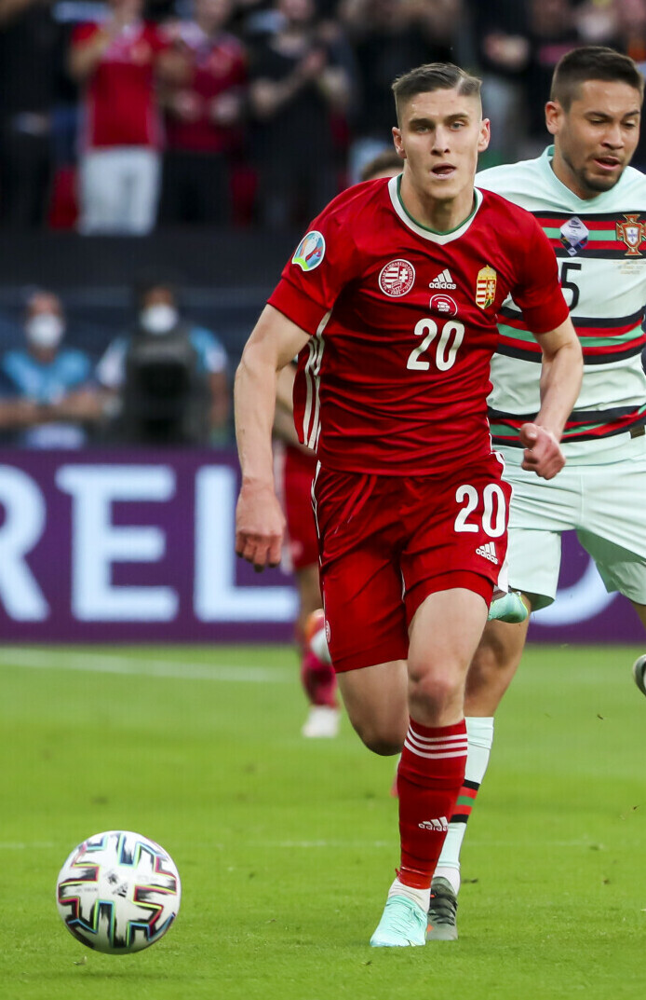
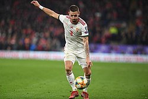
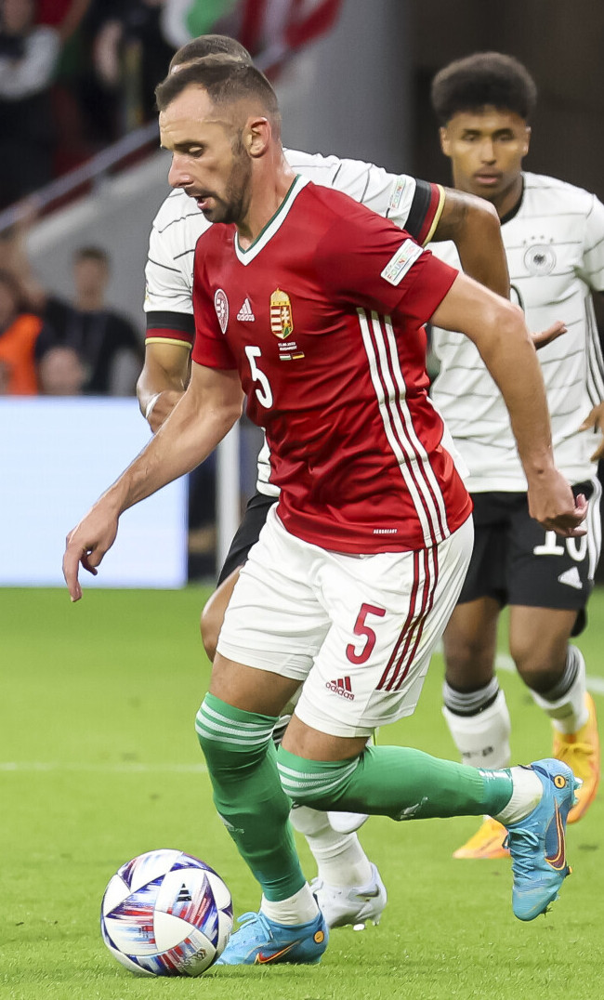
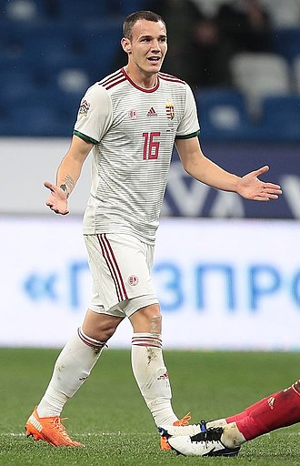
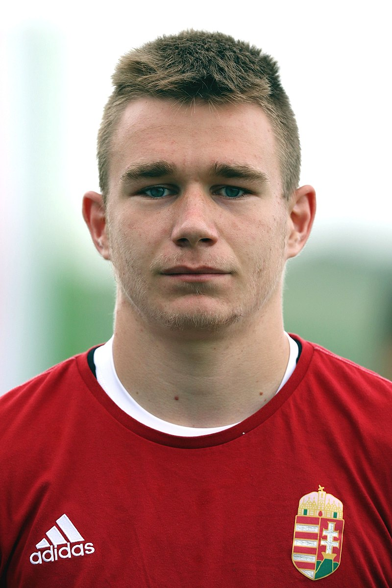
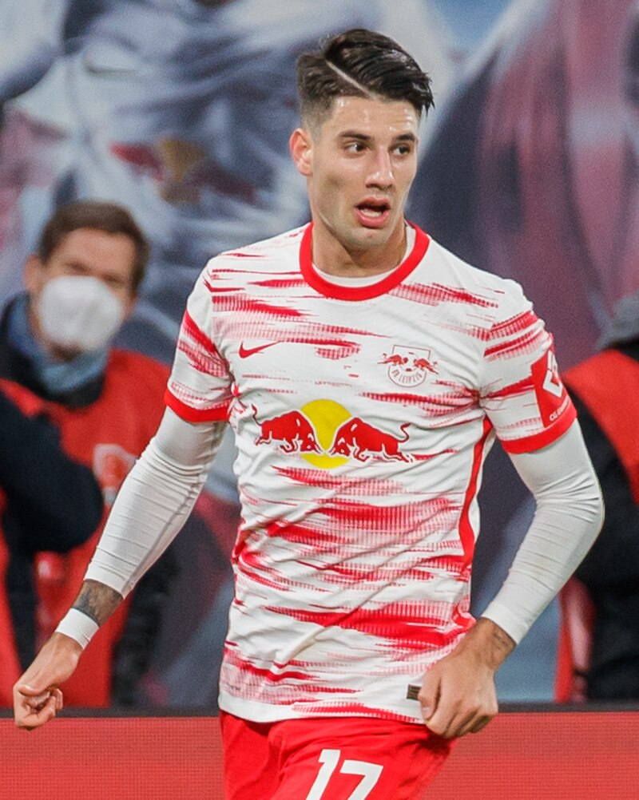
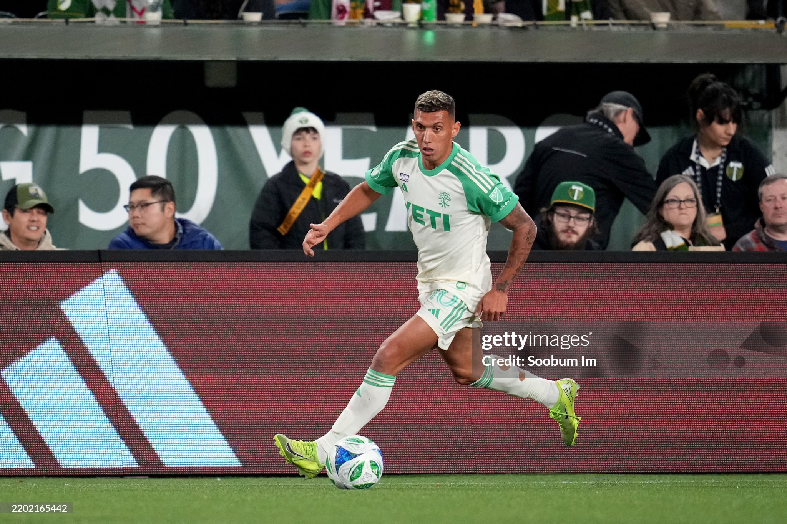

| Nombre | Posición | Edad | Bibliografía | Portada |
|---|---|---|---|---|
| Nemanja Nikolic | Delantero | 34 | Delantero húngaro destacado por su capacidad goleadora y experiencia internacional. |  |
| Zsombor Kerekes | Delantero | 28 | Delantero húngaro activo, rápido y habilidoso, capaz de generar oportunidades y marcar goles. |  |
| Dénes Dibusz | Portero | 32 | Portero del Ferencváros y de la selección húngara, reconocido por sus reflejos y seguridad bajo los tres palos. |  |
| Roland Varga | Mediocampista | 30 | Mediocampista del MTK Budapest, fuerte en recuperación de balón y distribución. |  |
| Zsolt Nagy | Mediocampista | 26 | Mediocampista del Puskás Akadémia FC, con gran visión y control de balón. |  |
| Attila Fiola | Defensor | 31 | Defensor central de la selección húngara, sólido en marca y juego aéreo. |  |
| Dániel Gazdag | Delantero | 27 | Delantero del Philadelphia Union, destacado por su capacidad goleadora y presencia en el área. |  |
| Attila Szalai | Defensor | 25 | Defensor del Standard de Lieja, sólido y con buena capacidad de anticipación y juego aéreo. |  |
| Péter Gulácsi | Portero | 33 | Portero del RB Leipzig, capitán de Hungría, reconocido por sus reflejos y liderazgo. | |
| Roland Sallai | Delantero | 26 | Delantero del Galatasaray, rápido y habilidoso, capaz de crear oportunidades y marcar goles. | |
| Dominik Szoboszlai | Mediocampista | 23 | Centrocampista del Liverpool, considerado la estrella actual de Hungría, con gran visión y disparo potente. |  |
| Myto Uzuni | Delantero | 27 | Delantero del Ferencváros, rápido y habilidoso, con buena capacidad de definición. |  |